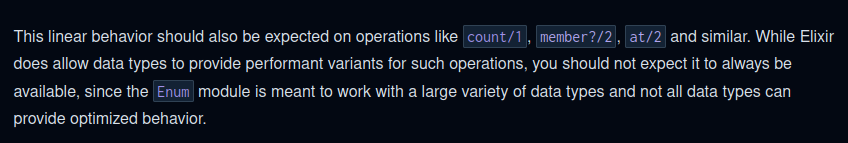
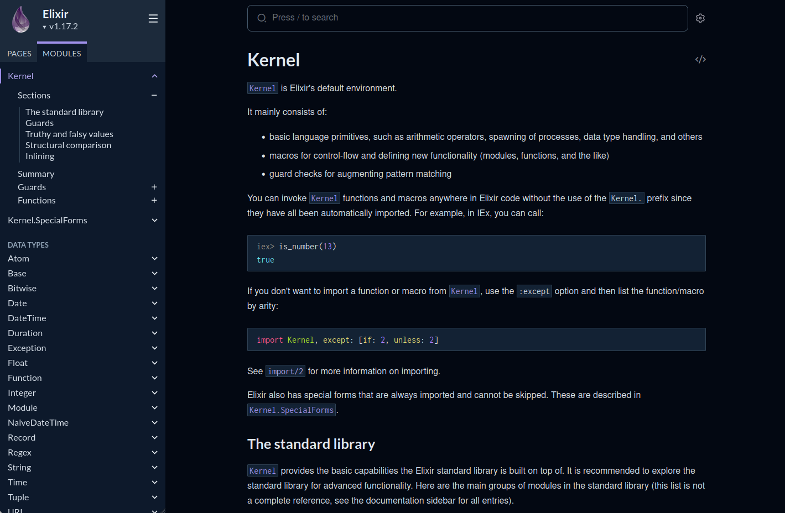

defmodule.Esto se aplica a cualquier estructura de Elixir que haga uso de
do:
(defmodule, def, if,
case, etc.)
equivale a
defp)defp, la función no
será visible desde fuera del módulo:Los ficheros de Elixir se compilan a código bytecode que se ejecuta en la máquina virtual de Erlang (BEAM).
Para cada módulo, el compilador genera un fichero
.beam con el bytecode del mismo.
Dentro de un mismo fichero Elixir (.ex) pueden
definirse varios módulos.
Cuando llamamos a una función f en Elixir definida
dentro de un módulo M:
Se espera que el bytecode de la función f se
encuentre en el fichero Elixir.M.beam.
Es posible llamar a funciones de Erlang desde Elixir.
Basta con indicar el nombre del módulo Erlang precedido por dos
puntos (:).
En este caso, se espera que el bytecode de f esté
definido en el fichero mi_mod.beam.
iexiex permite compilar ficheros de Elixir y
evaluar expresiones.Interactive Elixir (1.17.1) - press Ctrl+C to exit (type h() for help)
iex(1)> 2 + 2
4
iex(2)> String.length("Adios")
5
iex(3)> to_string(23)
"23"Es posible definir módulos directamente en la shell,
iex(5)> defmodule MiMod do
...(5)> def cuadrado(x), do: x * x
...(5)> end
iex(6)> MiMod.cuadrado(5)
25…pero lo habitual es compilarlos de un fichero .ex:
# Fichero: funciones.ex
defmodule FuncionesSimples do
defp cuadrado(x) do
x * x
end
def suma_cuadrados(x, y) do
cuadrado(x) + cuadrado(y)
end
endEn iex:
iex(7)> c "funciones.ex"
[FuncionesSimples] Nombres de los módulos cargados
iex(8)> FuncionesSimples.suma_cuadrados(3, 4)
25¿Cómo se sale de
iex?
Pulsando Ctrl+C dos veces.
¿Tenemos que poner siempre el nombre del módulo cuando llamamos a una función desde la shell?
No es necesario si se utiliza import previamente:
> c "funciones.ex"
[FuncionesSimples]
> import FuncionesSimples
> suma_cuadrados(3, 4) ➀
25.exselixir desde la línea de comandos:$ elixir suma_cuadrados.exs
El resultado es:
25También se puede incorporar la siguiente línea shebang
al fichero .exs para poder ejecutar el fichero directamente
en GNU/Linux:
Desde la línea de comandos:
$ chmod u+x suma_cuadrados.exs
$ ./suma_cuadrados.exs
El resultado es:
25= se le llama operador de
ajuste (matching).En Elixir, las variables son inmutables. Una vez ligadas a un valor, no es posible cambiarlo.
Aunque Elixir permite cosas como esta,
iex(1)> x = 3
iex(2)> x = 5 * x
iex(3)> x
15cuando se hace x = 5 * x no se está sobreescribiendo el
valor de la variable x, sino que se crea una nueva variable
que tiene el mismo nombre que la anterior.
ifcondcase (Semana 2)def signo(x) when x < 0 do
-1
end
def signo(x) when x == 0 do
0
end
def signo(x) when x > 0 do
1
endsigno. Es una definición
con tres casos.true:Si varias guardas se cumplen para un determinado valor, se evalúa solamente la primera de ellas.
Si la última cláusula no tiene guarda, se ejecutará solamente si ninguna de las cláusulas anteriores se ha ejecutado:
Desde una guarda solo se puede llamar a un conjunto limitado de funciones predefinidas en el lenguaje.
Esto se hace para evitar que la evaluación de una guarda tenga efectos laterales arbitrarios.
Por tanto, no se permite lo siguiente:
Operadores aritméticos: +, -,
*, div, rem, etc.
Comparaciones: ==, !=,
<=, etc.
Operadores lógicos: or, and,
not
Funciones de comprobación de tipos: is_integer,
is_list, etc.
Algunas otras funciones: elem, in,
length, etc.
Lista completa: [+]
Guardas definidas por el usuario: [defguard]
x == valor (donde
x es un parámetro) se puede colocar directamente el
valor en el parámetro.ifEjemplo:
if es posible
utilizar cualquier expresion, aunque haga llamadas a funciones definidas
por el usuario:condSon una alternativa a las cadenas if-else if:
Ejemplo:
if, los cond son
expresiones. Pueden utilizarse dentro de otras
expresiones.Si ninguna de las condiciones del cond se cumple, se
produce un error en tiempo de ejecución.
Se puede añadir una alternativa catch-all con la
condición true, en caso de ser necesario:
Los módulos de Elixir pueden anidarse:
El nombre del módulo interno viene precedido por el del módulo
externo, separados por un punto (.).
iex(1)> ModA.ModB.incr(3)
4En Elixir (y Erlang), es posible definir varias funciones con el mismo nombre, siempre que difieran en su aridad.
En la documentación, para evitar ambigüedades, se suele indicar
la aridad de las funciones mediante la notación func/n,
donde func es el nombre de la función y n es
su aridad.
Ejemplo:
«Si queremos calcular
el máximo de tres números, podemos utilizar la función
maximo/3. También existe una variante maximo/2
que recibe solo dos números»
Ejemplo en la documentación de Elixir:

Por ejemplo, supongamos una función
precio_final(precio, descuento) que aplique el porcentaje
descuento al precio pasado como
parámetro.
Si no se indica descuento, se supondrá que es del 10
%.
Valor por defecto para el segundo parámetro
def precio_final(precio, descuento \\ 10) do
precio - (precio * descuento / 100)
endprecio_final/2 y precio_final/1.Los nombres de módulos comienzan por letra mayúscula y utilizan el convenio CamelCase:
Ejemplos: OptionParser, GestorFinanzas,
Base
Los nombres de variables y funciones comienzan por letra minúscula y utilizan el convenio snake_case:
Ejemplos: spawn_monitor, to_string,
sueldo_base
Las funciones que devuelven un valor booleano suelen llevar el
signo ? al final de su nombre:
Ejemplos: String.contains?,
List.starts_with?, etc.
is_integer, is_list, etc.)Si el nombre de una función finaliza en !, significa
que esa función puede lanzar una excepción en casos de
fallo.
Normalmente se utiliza cuando hay dos versiones de una misma función:
File.read("ejemplo.txt")
Devuelve un valor especial (:error) si el fichero
ejemplo.txt no se puede leer.
File.read!(“ejemplo.txt”)
Lanza una excepción si el fichero ejemplo.txt no se
puede leer.
Documentación: https://hexdocs.pm/elixir/

Es posible acceder a la documentación de las funciones desde la misma shell IEx.
Para ello basta teclear h seguido del nombre de la
función:
> h rem
def rem(dividend, divisor)
@spec rem(integer(), neg_integer() | pos_integer()) :: integer()
Computes the remainder of an integer division.
rem/2 uses truncated division, which means that the result will always have the
sign of the dividend.
Raises an ArithmeticError exception if one of the arguments is not an integer,
or when the divisor is 0.
Allowed in guard tests. Inlined by the compiler.
## Examples
iex> rem(5, 2)
1
iex> rem(6, -4)
2
Kernel y Kernel.SpecialForms
Definen las funciones y macros básicas de Elixir.
Este módulo se importa automáticamente. Para llamar a alguna de sus funciones no es necesario indicar el nombre del módulo.
> Kernel.div(10, 3)
3
> div(10, 3)
3Documentación: https://hexdocs.pm/elixir/Kernel.html
String, Integer, Date,
List, Map etc.
> Integer.pow(2, 10)
1024
> String.trim(" Hola ")
"Hola"Enum
> Enum.max([1, 4, 6, -3, 2])
6
> Enum.member?(1..10, 3)
trueFile, IO
> File.read!("ejemplo.txt")
".... contenidos del fichero ejemplo.txt ..."Path
> Path.join(["dir1", "dir2", "nombre.txt"])
"dir1/dir2/nombre.txt"
> Path.relative_to("tmp/foo/bar", "tmp")
"foo/bar"